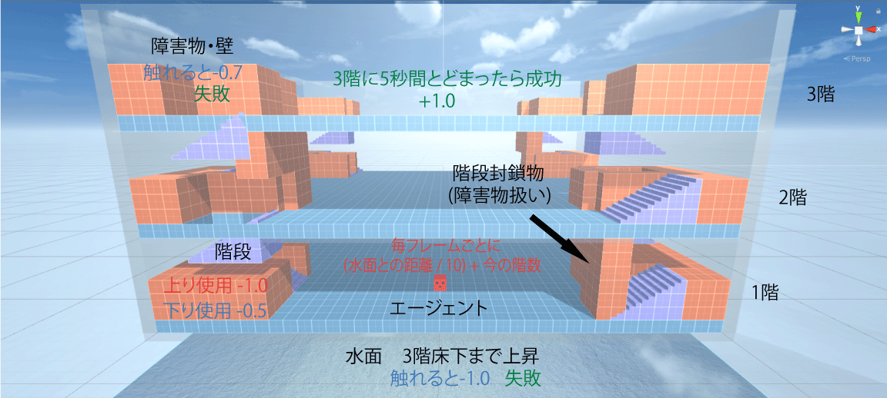
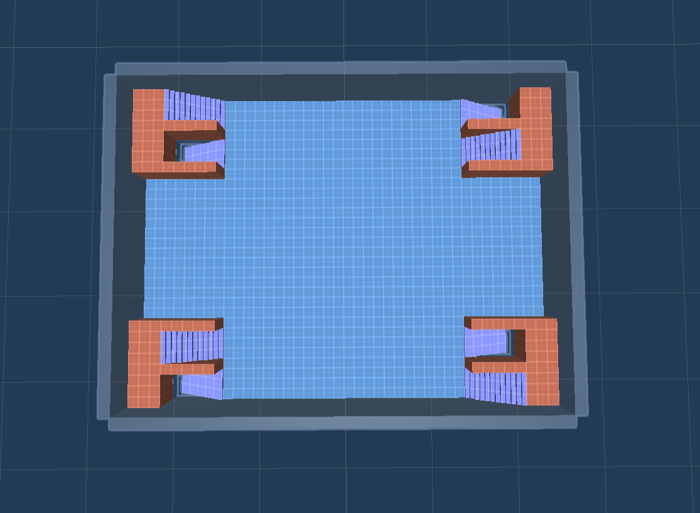
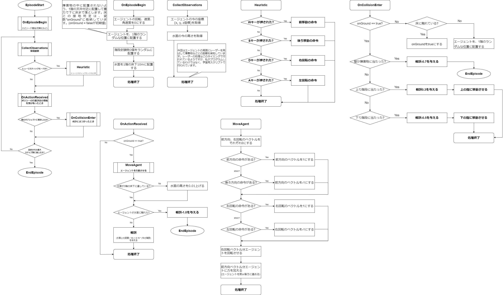

また、各階の構造は以下のようになっています。2階を例として示しました。

各階には4組の上り・下り階段があり、計8組の階段の中からランダムで3組が階段封鎖物で塞がれ、使えなくなります。
| オブジェクト名 | 仕様 |
|---|---|
| エージェント | 1階のランダムな位置に配置される。3階にできるだけ早く上がり、5秒間とどまることが目標。 また、レーザーを周囲に飛ばして周りの状況を観察する。さらに、自分の位置と水面の今の高さが常にわかる。 |
| 水面 | 1階の床下10mから毎フレームごとに0.01m上昇する。 |
| 階段 | 上りと下りが存在し、エージェントが触れると階を移動できる。 |
| 壁・障害物 | エージェントが触れてはいけないもの。 |
強化学習サイクル1エピソード内のプログラムの簡単なフローチャートです。メインプログラムは左端の「EpisodeStart」から始まり、「EndEpisode」で終わります。
ただし、このプログラムのフローチャートは、3. 強化学習とは?で説明した「学習用のスクリプト」ではありません。エージェントがどのように環境観察を行うかや、報酬の与え方を記述したプログラムです(見えにくい場合は、拡大してください)。
